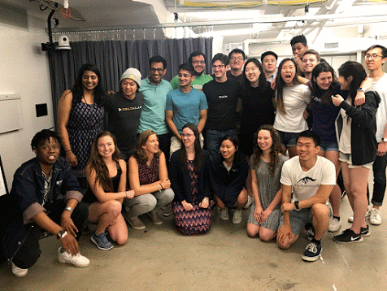

> leesha maliakal_
moliri: (latin, v) to endeavor, to attempt, to create
lmaliakal {at} u {dot} northwestern {dot} edu
[about] [publications] [ongoing research] [mentoring] [talks] [awards] [teaching + service]
I'm a fourth year Ph.D. student in the Technology and Social Behavior program at Northwestern, where I'm fortunate enough to work with Haoqi Zhang in the Design, Technology, Research program within Delta Lab.
I study Agile Research Studios, our model for research training at scale, in which students collaborate to learn and conduct research, developing their abilities to be more self-directed learners in a research community.
In my work, I explore how ecosystems of socio-technical tools might support the orchestraton of learning within these research communities. For example, I study how continual support systems can help individuals balance their own goals with supporting emerging needs of others in communities like DTR. I also study how we might embed expert models and practice into scaffolds that help novices to develop planning, helpseeking, and reflection skills with the support of their community.
I hope that these systems will enhance and extend the natural ways in which we reflect, learn, grow, and provide support for one another in our communities.

Our community is pretty spectacular.
> publications_
Defining and Assessing Risk Analysis: The Key to Strategic Iteration in Real-World Problem Solving
Spencer E. Carlson, Leesha V. Maliakal, Daniel G. Rees Lewis, Jamie Gorson, Elizabeth M. Gerber, Matthew W. Easterday
ICLS 2018 [paper]
Planning to Iterate: Supporting Iterative Practices for Real-world Ill- structured Problem-solving
Daniel G. Rees Lewis, Jamie Gorson, Leesha V. Maliakal, Spencer E. Carlson, Elizabeth M. Gerber, Christopher K. Riesbeck, Matthew W. Easterday
ICLS 2018 [paper]
Agile Research Studios: Orchestrating Communities of Practice to Advance Research Training
Haoqi Zhang, Matthew Easterday, Elizabeth Gerber, Daniel Rees Lewis, Leesha V. Maliakal
CSCW 2017 [paper] [poster demo]
[abstract]
CrowdCheer: Situational Crowdsourcing of Motivation for Runners 2nd Place ACM SRC Award
Leesha V. Maliakal
Grace Hopper ACM Student Research Competition 2015
[abstract]
[poster]
[slides]
> ongoing research_
Continual Support Systems for Agile Research Studio Orchestration
Fall 2017-present
We study the application of continual support systems to support the shared regulation of learning in Agile Research Studios by exploring ways to monitor student progress, recognize when students need additional supports, identify resources within the studio community that could support them, and optimize the routing of those support requests to the resources that have the expertise and ability to help.
Agile Research Studio Model
Spring 2014-present
Agile Research Studios (ARS) is a new socio-technical model for creating a research community of practice that socially shares regulation of learning to apprentice undergraduate teams into research at scale. ARS methodologies, social structures, and tools help groups learn better together so more undergraduates can conduct authentic research.
Continual Support Systems for Engaging Ad-Hoc Crowds
Fall 2014-present
We study the use of a continual support framework, for engaging ad-hoc crowds in supporting others’ needs while still focusing on their primary goals. The continual support framework monitors the status of individual goals and emerging needs; matches individuals to opportune moments to support others’ needs given the state of their goals; and primes individuals with the context they need to provide support on-demand.
> research mentoring_

Polaris: Research Planning Scaffolds via Design Argument Critique
Fall 2016-present
To help undergraduates monitor and reflect on their research progress and to make effective use of mentor time, we introduce Polaris, a scaffolding tool that supports novice researchers diagnosing project issues on their own. Polaris guides undergraduate researchers through a reflective exercise using computer-based prompts and templates to create and diagnose issues in design arguments, which detail core hypotheses in design-based research projects.
Students: Bomani McClendon, Sameer Srivastava
Skill Tracking + Development
Spring 2016-present
Studying how to support student helpseeking behaviors in ARS, with a goal of distributing support and growing skills across the community.
Students: Shankar Salwan, Natalie Ghidali, Sehmon Burnam
Muse: Metacognitive Reflections
Fall 2017-present
Studying how to support student awareness and reflection on their own research and regulation processes, and what prevents them from being effective.
Students: Olivia Gallager, Zev Stravitz, Victoria Cabales, Judy Lee, Nneoma Oradiegwu, Maggie Lou
> talks_
Design Arguments and Community Support @ Harvard CS 179: Design of Useful and Usable Interactive Systems - Mar 25, 2020
Not All is Lost: Finding work/life balance in grad school after my dad passed @ The Story Collider: Chicago - Jul 22, 2019
Continual Support Systems: Connecting Needs to Resources in Communities @ Regina Dominican High School Career Day - Feb 28, 2019
Continual Support Systems to Orchestrate Research Communities @ NU HCI Student Research Colloquium Series - Feb 22, 2018
> awards + fellowships_
Microsoft PhD Fellowship Department Nomination, 2019
Segal Cluster Design Research Fellowship, September 2017 - March 2018
Post-Baccalaureate Research Fellowship, March 2015 - September 2016
2nd Place Award in ACM Student Research Competition @ Grace Hopper Celebration, October 2015
Undergraduate Research Grant, February 2015
> teaching + service_
Design, Technology, Research program co-designer, September 2015-present
Design, Technology, Research program research mentor, September 2015-present
Agile Research University program and toolkit designer, June 2016-present
DFA Summer Studio Iterative Design Instructor, June 2017-September 2017
Brave Initiatives Head of Curriculum, Coding Curriculum Developer, Coding Instructor, and Coach, April 2015-September 2017